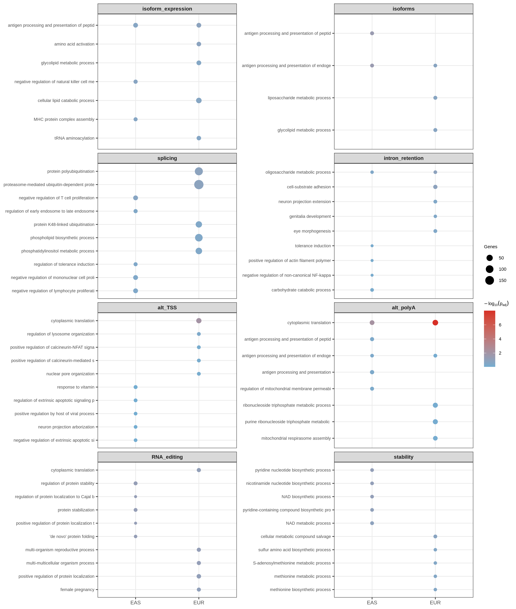
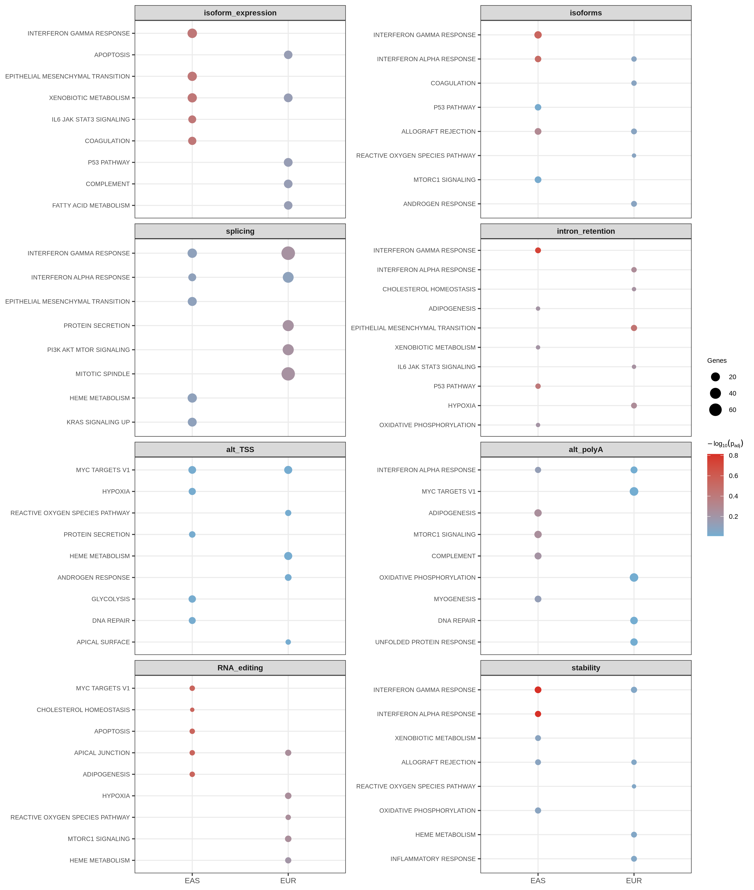
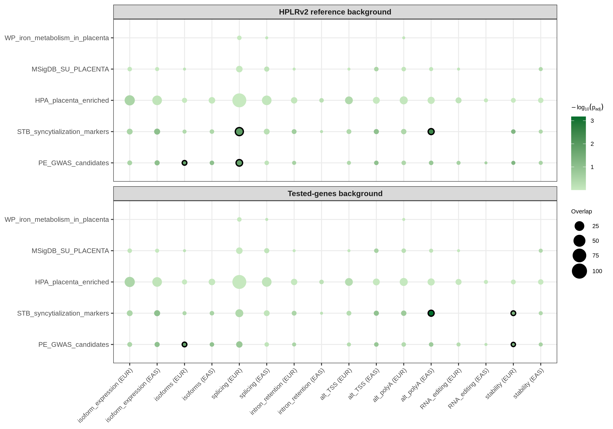
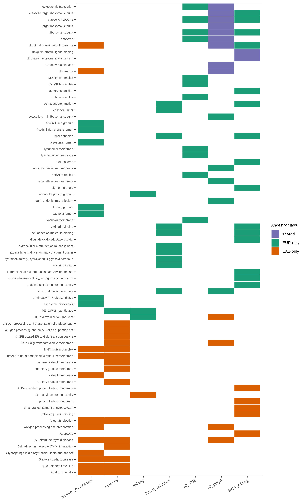
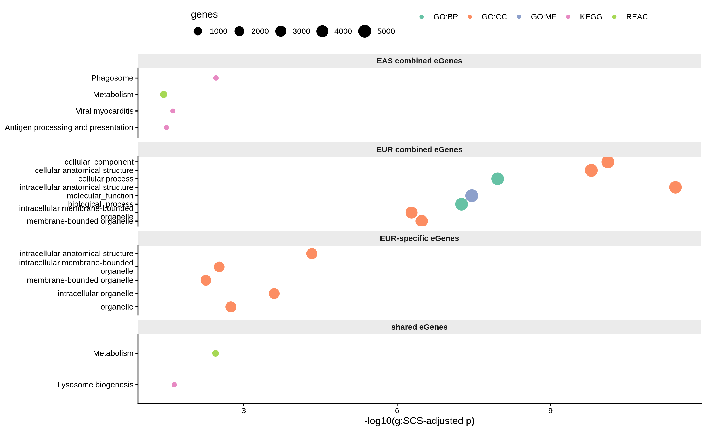

7 Functional enrichment
Two complementary over-representation analyses (ORA) characterize the xQTL gene catalog:
- Per-modality ORA — genes carrying at least one significant cis-xQTL
(q < 0.05) in the ungrouped top-variant scan, tested separately for each
of the 8 multi-phenotype modalities x 2 ancestries (16 strata) against
GO (BP/MF/CC), KEGG, MSigDB Hallmark, and a curated pregnancy/placenta
collection, under two gene universes (the HPLRv2 reference annotation and
the per-stratum tested genes). Results are read from the archived
analysis table (
xqtl_enrichment_all_terms.tsv.gz); stratum gene counts are recomputed from the discovery layer at render time. - Combined-catalog ORA (g:Profiler) — the combined-layer eGene sets (per ancestry, shared, and ancestry-specific) against the tested-gene universe of the same stratum, in the style of DevBrain Fig. S4D.
7.1 Per-modality enrichment of xQTL gene sets
| modality | ancestry | tested_genes | sig_genes | sig_novel_HPLRG |
|---|---|---|---|---|
| isoform_expression | EAS | 12309 | 1180 | 7 |
| isoform_expression | EUR | 13103 | 1181 | 27 |
| isoforms | EAS | 9049 | 304 | 2 |
| isoforms | EUR | 9231 | 187 | 3 |
| splicing | EAS | 5252 | 1343 | 21 |
| splicing | EUR | 7584 | 5036 | 97 |
| intron_retention | EAS | 1800 | 55 | 0 |
| intron_retention | EUR | 2593 | 90 | 0 |
| alt_TSS | EAS | 7715 | 326 | 1 |
| alt_TSS | EUR | 7883 | 695 | 4 |
| alt_polyA | EAS | 7273 | 319 | 1 |
| alt_polyA | EUR | 7356 | 648 | 3 |
| RNA_editing | EAS | 353 | 30 | 0 |
| RNA_editing | EUR | 884 | 110 | 0 |
| stability | EAS | 4492 | 148 | 0 |
| stability | EUR | 7372 | 206 | 4 |
The HPLRv2 reference universe contains 13,835 genes (13,302 Ensembl + 533 novel HPLRG_ genes). Of these, 12,575 are annotated in org.Hs.eg.db and therefore visible to GO/KEGG ORA; novel HPLRG_ genes (up to 97 significant in EUR splicing) are silently excluded from annotation-based tests (see Enrichment limitations).
7.1.1 Pregnancy/placenta gene collection
| term | n_genes_total | n_in_HPLRv2 |
|---|---|---|
| HPA_placenta_enriched | 242 | 233 |
| PE_GWAS_candidates | 26 | 13 |
| MSigDB_SU_PLACENTA | 30 | 25 |
| WP_iron_metabolism_in_placenta | 12 | 9 |
| STB_syncytialization_markers | 32 | 30 |
WP_iron_metabolism_in_placenta has only 9 genes in the HPLRv2 universe, so
it was tested with minGSSize = 3 and only in strata where it passes that
filter.
7.1.2 ORA results
Across all 16 strata x 6 databases x 2 backgrounds (127,206 tested term-stratum combinations), 195 term-stratum combinations reach FDR < 0.05 (115 with the HPLRv2 background, 80 with the tested-genes background).
| modality | ancestry | GO_BP | GO_CC | GO_MF | KEGG | PREGNANCY |
|---|---|---|---|---|---|---|
| isoform_expression | EAS | 0 | 3 | 1 | 8 | 0 |
| isoform_expression | EUR | 0 | 5 | 0 | 2 | 0 |
| isoforms | EAS | 6 | 7 | 0 | 6 | 0 |
| isoforms | EUR | 0 | 0 | 0 | 0 | 1 |
| splicing | EAS | 0 | 0 | 1 | 0 | 0 |
| splicing | EUR | 0 | 1 | 0 | 0 | 2 |
| intron_retention | EUR | 0 | 3 | 7 | 0 | 0 |
| alt_TSS | EUR | 1 | 10 | 0 | 0 | 0 |
| alt_polyA | EAS | 1 | 6 | 1 | 4 | 1 |
| alt_polyA | EUR | 1 | 9 | 2 | 2 | 0 |
| RNA_editing | EAS | 0 | 0 | 6 | 1 | 0 |
| RNA_editing | EUR | 0 | 8 | 9 | 0 | 0 |
7.1.3 GO Biological Process
| modality | ancestry | Description | GeneRatio | BgRatio | p.adjust |
|---|---|---|---|---|---|
| alt_polyA | EUR | cytoplasmic translation | 33/564 | 155/10846 | 0.00000 |
| alt_polyA | EAS | cytoplasmic translation | 16/278 | 155/10846 | 0.00646 |
| alt_TSS | EUR | cytoplasmic translation | 25/616 | 155/10846 | 0.00832 |
| isoforms | EAS | antigen processing and presentation of endogenous peptide antigen via MHC class I | 5/256 | 16/10846 | 0.03120 |
| isoforms | EAS | antigen processing and presentation of endogenous peptide antigen | 5/256 | 18/10846 | 0.03120 |
| isoforms | EAS | antigen processing and presentation of peptide antigen via MHC class I | 6/256 | 29/10846 | 0.03120 |
| isoforms | EAS | antigen processing and presentation of endogenous peptide antigen via MHC class Ib | 4/256 | 10/10846 | 0.03120 |
| isoforms | EAS | antigen processing and presentation of endogenous peptide antigen via MHC class I via ER pathway | 4/256 | 10/10846 | 0.03120 |
| isoforms | EAS | antigen processing and presentation of peptide antigen via MHC class Ib | 4/256 | 11/10846 | 0.04020 |
The dominant GO BP signal is cytoplasmic translation, driven by ribosomal protein genes, in alternative polyadenylation (EUR: 33/564 genes, FDR = 10^{-8}; EAS: FDR = 0.0065) and alternative TSS (EUR). Ribosomal protein genes are well known to undergo extensive alternative 3’UTR regulation, so this is a coherent modality-specific signal. In EAS isoforms, MHC class I antigen processing terms are enriched (5-6 genes, FDR < 0.05).

Figure 7.1: Top GO Biological Process terms per stratum (HPLRv2 background).
7.1.4 GO Molecular Function and Cellular Component
| db | modality | ancestry | Description | GeneRatio | p.adjust |
|---|---|---|---|---|---|
| GO_CC | RNA_editing | EUR | cytosolic ribosome | 7/104 | 1.54e-02 |
| GO_CC | RNA_editing | EUR | focal adhesion | 12/104 | 1.54e-02 |
| GO_CC | RNA_editing | EUR | cell-substrate junction | 12/104 | 1.54e-02 |
| GO_CC | RNA_editing | EUR | melanosome | 6/104 | 1.54e-02 |
| GO_CC | RNA_editing | EUR | pigment granule | 6/104 | 1.54e-02 |
| GO_CC | RNA_editing | EUR | ribosomal subunit | 7/104 | 4.93e-02 |
| GO_CC | RNA_editing | EUR | cytosolic large ribosomal subunit | 4/104 | 4.93e-02 |
| GO_CC | RNA_editing | EUR | adherens junction | 6/104 | 4.93e-02 |
| GO_CC | alt_TSS | EUR | cytosolic ribosome | 19/640 | 7.39e-03 |
| GO_CC | alt_TSS | EUR | ribosomal subunit | 23/640 | 3.52e-02 |
| GO_CC | alt_TSS | EUR | SWI/SNF complex | 7/640 | 3.52e-02 |
| GO_CC | alt_TSS | EUR | brahma complex | 5/640 | 3.52e-02 |
| GO_CC | alt_TSS | EUR | lysosomal membrane | 38/640 | 3.52e-02 |
| GO_CC | alt_TSS | EUR | lytic vacuole membrane | 38/640 | 3.52e-02 |
| GO_CC | alt_TSS | EUR | vacuolar membrane | 40/640 | 3.94e-02 |
| GO_CC | alt_TSS | EUR | ribosome | 25/640 | 4.13e-02 |
| GO_CC | alt_TSS | EUR | RSC-type complex | 5/640 | 4.13e-02 |
| GO_CC | alt_TSS | EUR | npBAF complex | 5/640 | 4.13e-02 |
| GO_CC | alt_polyA | EAS | ribosome | 19/290 | 7.74e-04 |
| GO_CC | alt_polyA | EAS | cytosolic ribosome | 13/290 | 7.74e-04 |
| GO_CC | alt_polyA | EAS | cytosolic large ribosomal subunit | 9/290 | 7.74e-04 |
| GO_CC | alt_polyA | EAS | large ribosomal subunit | 11/290 | 1.06e-02 |
| GO_CC | alt_polyA | EAS | ribosomal subunit | 14/290 | 1.63e-02 |
| GO_CC | alt_polyA | EAS | ER to Golgi transport vesicle membrane | 7/290 | 2.48e-02 |
| GO_CC | alt_polyA | EUR | ribosomal subunit | 35/588 | 0.00e+00 |
| GO_CC | alt_polyA | EUR | cytosolic ribosome | 27/588 | 0.00e+00 |
| GO_CC | alt_polyA | EUR | ribosome | 39/588 | 0.00e+00 |
| GO_CC | alt_polyA | EUR | large ribosomal subunit | 25/588 | 0.00e+00 |
| GO_CC | alt_polyA | EUR | cytosolic large ribosomal subunit | 17/588 | 1.00e-07 |
| GO_CC | alt_polyA | EUR | rough endoplasmic reticulum | 12/588 | 6.29e-04 |
| GO_CC | alt_polyA | EUR | cytosolic small ribosomal subunit | 9/588 | 1.31e-02 |
| GO_CC | alt_polyA | EUR | organelle inner membrane | 43/588 | 1.59e-02 |
| GO_CC | alt_polyA | EUR | mitochondrial inner membrane | 39/588 | 3.74e-02 |
| GO_CC | intron_retention | EUR | cell-substrate junction | 11/85 | 2.80e-02 |
| GO_CC | intron_retention | EUR | collagen trimer | 4/85 | 3.20e-02 |
| GO_CC | intron_retention | EUR | focal adhesion | 10/85 | 3.69e-02 |
| GO_CC | isoform_expression | EAS | MHC protein complex | 8/1074 | 4.20e-02 |
| GO_CC | isoform_expression | EAS | side of membrane | 64/1074 | 4.20e-02 |
| GO_CC | isoform_expression | EAS | lumenal side of endoplasmic reticulum membrane | 10/1074 | 4.20e-02 |
| GO_CC | isoform_expression | EUR | lysosomal lumen | 22/1028 | 2.07e-04 |
| GO_CC | isoform_expression | EUR | vacuolar lumen | 28/1028 | 8.53e-03 |
| GO_CC | isoform_expression | EUR | ficolin-1-rich granule | 31/1028 | 8.53e-03 |
| GO_CC | isoform_expression | EUR | ficolin-1-rich granule lumen | 24/1028 | 1.63e-02 |
| GO_CC | isoform_expression | EUR | tertiary granule | 24/1028 | 4.78e-02 |
| GO_CC | isoforms | EAS | lumenal side of endoplasmic reticulum membrane | 6/273 | 1.38e-02 |
| GO_CC | isoforms | EAS | MHC protein complex | 5/273 | 1.38e-02 |
| GO_CC | isoforms | EAS | secretory granule membrane | 16/273 | 2.10e-02 |
| GO_CC | isoforms | EAS | lumenal side of membrane | 6/273 | 2.10e-02 |
| GO_CC | isoforms | EAS | ER to Golgi transport vesicle membrane | 7/273 | 2.10e-02 |
| GO_CC | isoforms | EAS | tertiary granule membrane | 7/273 | 2.21e-02 |
| GO_CC | isoforms | EAS | COPII-coated ER to Golgi transport vesicle | 8/273 | 3.50e-02 |
| GO_CC | splicing | EUR | ribonucleoprotein granule | 113/4413 | 3.07e-02 |
| GO_MF | RNA_editing | EAS | ubiquitin protein ligase binding | 7/28 | 2.25e-04 |
| GO_MF | RNA_editing | EAS | ubiquitin-like protein ligase binding | 7/28 | 2.25e-04 |
| GO_MF | RNA_editing | EAS | ATP-dependent protein folding chaperone | 3/28 | 1.39e-03 |
| GO_MF | RNA_editing | EAS | protein folding chaperone | 3/28 | 9.59e-03 |
| GO_MF | RNA_editing | EAS | structural constituent of cytoskeleton | 3/28 | 1.62e-02 |
| GO_MF | RNA_editing | EAS | unfolded protein binding | 3/28 | 3.50e-02 |
| GO_MF | RNA_editing | EUR | cadherin binding | 12/106 | 5.14e-03 |
| GO_MF | RNA_editing | EUR | cell adhesion molecule binding | 14/106 | 8.39e-03 |
| GO_MF | RNA_editing | EUR | disulfide oxidoreductase activity | 4/106 | 2.86e-02 |
| GO_MF | RNA_editing | EUR | protein disulfide isomerase activity | 3/106 | 2.86e-02 |
| GO_MF | RNA_editing | EUR | intramolecular oxidoreductase activity, transposing S-S bonds | 3/106 | 2.86e-02 |
| GO_MF | RNA_editing | EUR | structural constituent of ribosome | 7/106 | 3.30e-02 |
| GO_MF | RNA_editing | EUR | ubiquitin protein ligase binding | 9/106 | 3.30e-02 |
| GO_MF | RNA_editing | EUR | ubiquitin-like protein ligase binding | 9/106 | 4.34e-02 |
| GO_MF | RNA_editing | EUR | oxidoreductase activity, acting on a sulfur group of donors | 4/106 | 4.36e-02 |
| GO_MF | alt_polyA | EAS | structural constituent of ribosome | 14/289 | 2.51e-02 |
| GO_MF | alt_polyA | EUR | structural constituent of ribosome | 33/577 | 0.00e+00 |
| GO_MF | alt_polyA | EUR | structural molecule activity | 53/577 | 2.82e-05 |
| GO_MF | intron_retention | EUR | cell adhesion molecule binding | 16/86 | 3.83e-05 |
| GO_MF | intron_retention | EUR | structural molecule activity | 14/86 | 2.08e-03 |
| GO_MF | intron_retention | EUR | cadherin binding | 10/86 | 4.62e-03 |
| GO_MF | intron_retention | EUR | extracellular matrix structural constituent | 6/86 | 4.62e-03 |
| GO_MF | intron_retention | EUR | integrin binding | 6/86 | 9.19e-03 |
| GO_MF | intron_retention | EUR | extracellular matrix structural constituent conferring tensile strength | 3/86 | 2.19e-02 |
| GO_MF | intron_retention | EUR | hydrolase activity, hydrolyzing O-glycosyl compounds | 4/86 | 3.89e-02 |
| GO_MF | isoform_expression | EAS | structural constituent of ribosome | 31/1057 | 3.47e-02 |
| GO_MF | splicing | EAS | O-methyltransferase activity | 10/1162 | 2.38e-02 |
Notable patterns:
- Ribosome / structural constituent of ribosome recurs across alt_polyA (both ancestries), alt_TSS (EUR), RNA editing (EUR) and isoform expression (EAS) — the same ribosomal-protein signal seen in GO BP and KEGG.
- Extracellular matrix / cell adhesion (cadherin binding, integrin binding, collagen trimer, focal adhesion) is specific to intron retention (EUR) — ECM genes are intron-rich and a known substrate class for intron detention.
- Ubiquitin/ubiquitin-like protein ligase binding and protein-folding chaperones are specific to RNA editing (EAS) (FDR = 2.3e-4).
- Lysosomal lumen / vacuolar lumen terms are specific to isoform expression (EUR) (FDR = 2.1e-4).
7.1.5 KEGG
| modality | ancestry | Description | GeneRatio | p.adjust |
|---|---|---|---|---|
| RNA_editing | EAS | Apoptosis | 4/15 | 1.79e-02 |
| alt_polyA | EAS | Antigen processing and presentation | 8/155 | 6.60e-03 |
| alt_polyA | EAS | Coronavirus disease | 16/155 | 6.60e-03 |
| alt_polyA | EAS | Ribosome | 15/155 | 8.34e-03 |
| alt_polyA | EAS | Autoimmune thyroid disease | 5/155 | 2.99e-02 |
| alt_polyA | EUR | Ribosome | 34/308 | 0.00e+00 |
| alt_polyA | EUR | Coronavirus disease | 30/308 | 1.31e-05 |
| isoform_expression | EAS | Viral myocarditis | 15/522 | 1.10e-02 |
| isoform_expression | EAS | Antigen processing and presentation | 14/522 | 1.10e-02 |
| isoform_expression | EAS | Allograft rejection | 9/522 | 1.18e-02 |
| isoform_expression | EAS | Ribosome | 32/522 | 1.30e-02 |
| isoform_expression | EAS | Autoimmune thyroid disease | 9/522 | 1.30e-02 |
| isoform_expression | EAS | Graft-versus-host disease | 9/522 | 1.30e-02 |
| isoform_expression | EAS | Type I diabetes mellitus | 9/522 | 1.60e-02 |
| isoform_expression | EAS | Glycosphingolipid biosynthesis - lacto and neolacto series | 6/522 | 4.99e-02 |
| isoform_expression | EUR | Lysosome biogenesis | 39/509 | 9.57e-03 |
| isoform_expression | EUR | Aminoacyl-tRNA biosynthesis | 13/509 | 9.57e-03 |
| isoforms | EAS | Viral myocarditis | 9/133 | 5.45e-04 |
| isoforms | EAS | Allograft rejection | 5/133 | 1.46e-02 |
| isoforms | EAS | Autoimmune thyroid disease | 5/133 | 1.46e-02 |
| isoforms | EAS | Graft-versus-host disease | 5/133 | 1.46e-02 |
| isoforms | EAS | Type I diabetes mellitus | 5/133 | 1.46e-02 |
| isoforms | EAS | Cell adhesion molecule (CAM) interaction | 8/133 | 4.31e-02 |
KEGG recapitulates the two main axes: Ribosome (alt_polyA EUR FDR = 2.2e-8; alt_polyA EAS and isoform expression EAS) and an HLA-driven immune cluster in EAS (antigen processing and presentation, allograft rejection, graft-versus-host disease, type I diabetes, autoimmune thyroid disease, viral myocarditis — all overlapping HLA gene sets). Lysosome biogenesis and aminoacyl-tRNA biosynthesis are enriched in EUR isoform expression.
7.1.6 MSigDB Hallmark
No Hallmark set reaches FDR < 0.05 in any stratum or background (minimum FDR = 0.15). Hallmark sets are large (50-200 genes) and broadly defined; given the large xQTL gene sets, power to detect them is limited. The figure below shows the top 5 Hallmark terms per stratum for transparency.

Figure 7.2: Top MSigDB Hallmark terms per stratum (HPLRv2 background) — none reach FDR < 0.05.
7.1.7 Pregnancy/placenta collection
| modality | ancestry | background | Description | GeneRatio | BgRatio | p.adjust |
|---|---|---|---|---|---|---|
| alt_polyA | EAS | tested | STB_syncytialization_markers | 8/22 | 18/193 | 0.000668 |
| alt_polyA | EAS | hplrv2 | STB_syncytialization_markers | 8/22 | 30/277 | 0.003300 |
| splicing | EUR | hplrv2 | STB_syncytialization_markers | 22/132 | 30/277 | 0.012100 |
| splicing | EUR | hplrv2 | PE_GWAS_candidates | 11/132 | 13/277 | 0.015200 |
| isoforms | EUR | hplrv2 | PE_GWAS_candidates | 3/8 | 13/277 | 0.015900 |
| isoforms | EUR | tested | PE_GWAS_candidates | 3/8 | 11/224 | 0.017400 |
| stability | EUR | tested | STB_syncytialization_markers | 3/7 | 16/163 | 0.045100 |
| stability | EUR | tested | PE_GWAS_candidates | 2/7 | 7/163 | 0.045100 |

Figure 7.3: Pregnancy/placenta gene-set enrichment across strata (rings: FDR < 0.05).
Key observations:
- Syncytiotrophoblast/syncytialization markers (PSG, CGB, CSH, ERVW-1/ERVFRD-1 family genes) are enriched among alternative polyA QTL genes in EAS (8/22 set genes, FDR = 6.7e-4, robust to background choice) and splicing QTL genes in EUR (22/132, FDR = 0.012, HPLRv2 background only), with a nominal signal in EUR RNA stability (3/7, FDR = 0.045, tested background only).
- Preeclampsia GWAS candidate genes are enriched among EUR isoform-ratio QTL genes (3/8, FDR = 0.016, both backgrounds) and EUR splicing QTL genes (11/132, FDR = 0.015, HPLRv2 background only).
- HPA placenta-enriched and SU_PLACENTA sets are not enriched in any stratum: placental expression per se is expected for tested genes, so this is a useful negative control.
- WP iron metabolism in placenta (9 genes in universe) shows no enrichment (min FDR = 0.79).
7.1.8 Cross-ancestry contrast
Of the 77 unique significant terms (HPLRv2 background): 12 shared, 37 EUR-only, 28 EAS-only.
- Shared: the ribosome/cytoplasmic-translation cluster (GO BP/MF/CC + KEGG Ribosome), ubiquitin-ligase binding, and the STB syncytialization set.
- EAS-only: the MHC-I antigen-processing cluster (GO BP antigen presentation; KEGG antigen processing, allograft rejection, GvHD, T1D, autoimmune thyroid disease, viral myocarditis; GO CC MHC protein complex / ER membrane), consistent with ancestry-differentiated HLA regulation; plus O-methyltransferase activity (EAS splicing).
- EUR-only: lysosomal lumen (isoform expression), ECM/cell-adhesion terms (intron retention), SWI/SNF chromatin-remodeling complexes (alt_TSS), and both pregnancy-set signals (PE GWAS candidates in isoforms/splicing; note STB is shared via EAS alt_polyA).

Figure 7.4: Significant terms (FDR < 0.05, HPLRv2 background) by ancestry class.
7.1.9 Background sensitivity
| concord | N |
|---|---|
| hplrv2-only | 61 |
| both | 54 |
| tested-only | 26 |
54 significant term-strata are detected under both backgrounds, 61 only with HPLRv2, and 26 only with the tested-genes background. All headline signals (ribosome/translation in alt_polyA, MHC-I in EAS isoforms, STB in EAS alt_polyA, PE GWAS in EUR isoforms) are significant under both backgrounds. The tested-only gains are dominated by transcription-factor activity terms in splicing strata, where the narrower tested universe increases power for that class; the HPLRv2-only losses are mostly ribosomal/secretory terms whose background frequency is higher in the full reference. Conclusions are robust to background choice.
7.2 Combined-catalog enrichment (g:Profiler)
Over-representation analysis on the combined-layer eGene sets, in the style of DevBrain Fig. S4D.

| query_set | source | term_id | term_name | p_value | intersection_size |
|---|---|---|---|---|---|
| EAS combined eGenes | KEGG | KEGG:04145 | Phagosome | 0.003 | 51 |
| EAS combined eGenes | KEGG | KEGG:05416 | Viral myocarditis | 0.024 | 24 |
| EAS combined eGenes | KEGG | KEGG:04612 | Antigen processing and presentation | 0.032 | 23 |
| EAS combined eGenes | REAC | REAC:R-HSA-1430728 | Metabolism | 0.037 | 452 |
| EUR combined eGenes | GO:CC | GO:0005622 | intracellular anatomical structure | 0.000 | 4605 |
| EUR combined eGenes | GO:CC | GO:0005575 | cellular_component | 0.000 | 5059 |
| EUR combined eGenes | GO:CC | GO:0110165 | cellular anatomical structure | 0.000 | 5041 |
| EUR combined eGenes | GO:BP | GO:0009987 | cellular process | 0.000 | 4738 |
| EUR combined eGenes | GO:MF | GO:0003674 | molecular_function | 0.000 | 5016 |
| EUR-specific eGenes | GO:CC | GO:0005622 | intracellular anatomical structure | 0.000 | 2989 |
| EUR-specific eGenes | GO:CC | GO:0043229 | intracellular organelle | 0.000 | 2743 |
| EUR-specific eGenes | GO:CC | GO:0043226 | organelle | 0.002 | 2844 |
| EUR-specific eGenes | GO:CC | GO:0043231 | intracellular membrane-bounded organelle | 0.003 | 2581 |
| EUR-specific eGenes | GO:CC | GO:0043227 | membrane-bounded organelle | 0.005 | 2735 |
| shared eGenes | REAC | REAC:R-HSA-1430728 | Metabolism | 0.004 | 307 |
| shared eGenes | KEGG | KEGG:04142 | Lysosome biogenesis | 0.023 | 53 |
Where the per-modality module above maps modality-specific biology across
six databases with two universes, this subsection tests the combined-layer
eGene catalog (per ancestry, plus shared and ancestry-specific sets)
against the tested-gene universe of the same stratum — not the whole
genome — following the DevBrain xQTL convention; g:SCS is g:Profiler’s
native multiple-testing correction. Sets with fewer than 5 genes are skipped
(ORA is not meaningful). Full term tables are in tables/enrichment_*.tsv.
7.3 Enrichment limitations
- Large-set dilution. The biggest strata (EUR splicing: 5,036 significant genes = 40% of the annotated universe; isoform expression: ~1,180 genes) approach a large fraction of the background, so ORA has little power to detect specific biology there — e.g., canonical “spliceosome” terms are not enriched in splicing strata (FDR = 1). Significant terms in large strata should be read as the strongest deviations, not the only biology present.
- Annotation visibility. 533 novel HPLRG_ genes and Ensembl genes missing from org.Hs.eg.db (1,260 of 13,835) are invisible to GO/KEGG ORA.
- KEGG immune pathways (allograft rejection, GvHD, T1D, etc.) are overlapping HLA gene sets; they represent one signal, not six independent ones.
- Small curated sets. PE GWAS (13 genes in universe) and WP iron metabolism (9) have limited power; WP is only testable in strata where >= 3 of its genes are in the universe.
- ORA is not causal. Enrichment of PE GWAS candidates among xQTL genes is consistent with — but does not prove — regulatory mediation of those GWAS signals; colocalization is the appropriate follow-up.
- The per-modality module reads the archived ORA table (clusterProfiler 4.14; KEGG from the live API snapshot at archive time); the g:Profiler subsection queries the live g:Profiler API at render time.
Per-modality module methods: input = ungrouped top-variant cis-QTL scan
(tensorQTL) per modality x ancestry; significant genes = unique genes with
q < 0.05 among tested features; universes = HPLRv2.0 PANTRY GTF gene set
(primary) or per-stratum tested genes (sensitivity); tests =
clusterProfiler enrichGO (ENSEMBL keys), enrichKEGG (Entrez via
bitr), enricher (Hallmark via msigdbr; custom pregnancy collection);
BH FDR within each stratum x database x background; significance at
FDR < 0.05; pregnancy sets tested with minGSSize = 3.